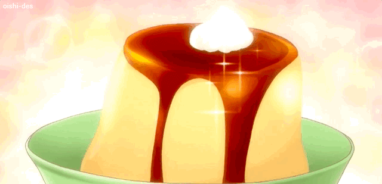

Crème Caramel

A simplified recipe of a Crème Caramel found at Great British Chefs
Ingredients required
- 220g caster sugar
- 500ml whole milk
- 1 vanilla pod
- 4 eggs
- 1 egg yolk
Instructions
- To start the dish, make the caramel. Add 100g of the caster sugar to a heavy-based pan and place over a medium-high heat. The sugar will melt and start to caramelise, going from clear to blonde, then golden, then finally dark brown when it reaches 190-200°C
- While the sugar is caramelising, line the base of a high-sided oven tray with a damp cloth followed by 4 ramekin dishes. As soon as the caramel beings to turn dark brown, immediately remove the pan from the heat and pour the caramel into the base of each ramekin, creating a thin layer 2-3mm in thickness. Set aside and allow the caramel to set in a cool part of the kitchen
- Pour the milk into a saucepan, split the vanilla pod and scrape the seeds into the milk. Bring to the boil, then immediately remove from the heat and set aside
- Whisk together the eggs, yolk and remaining 120g of sugar in a bowl then pour over the hot milk, stirring continuously. Pass through a fine chinois and pour into the ramekins
- Preheat the oven to 130°C/gas mark 1
- Pour some boiling hot water into the baking tray around the ramekins and place in the oven for 45 minutes
- Remove from the oven and allow to cool in the tray for 20 minutes. Once cool, remove from the water and place in the fridge until chilled
- To plate the dish, remove the crème caramels from the fridge. Run a small knife around the sides of the ramekins and gently turn out onto a plate or bowl.